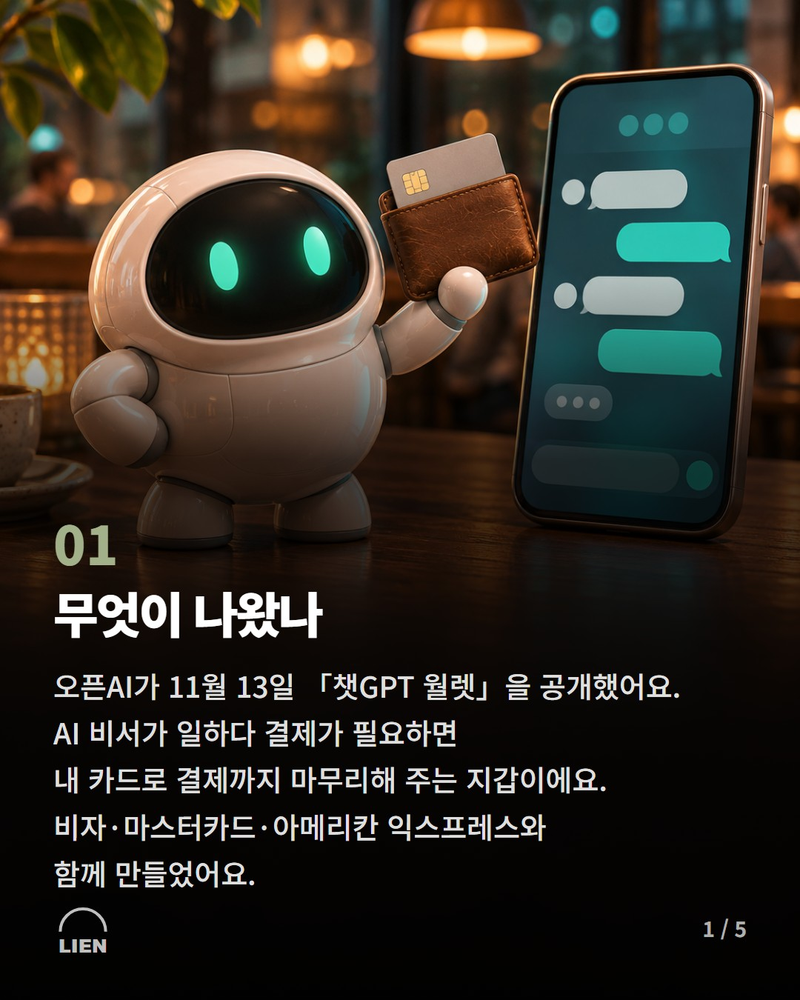
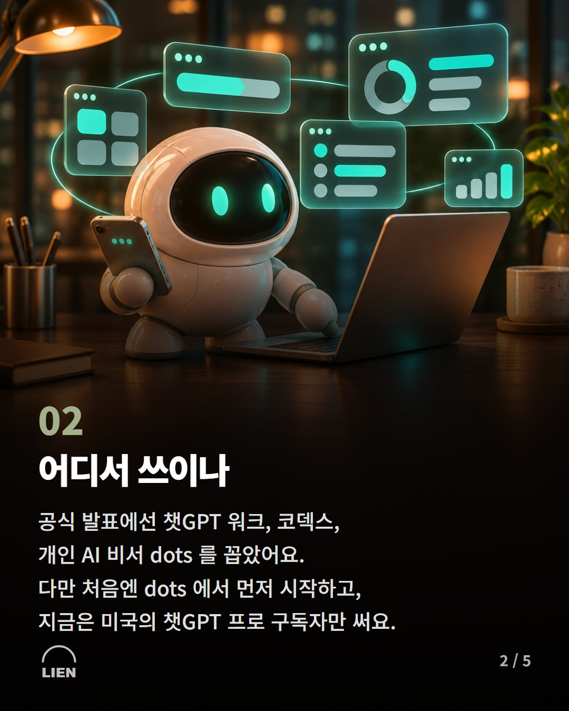
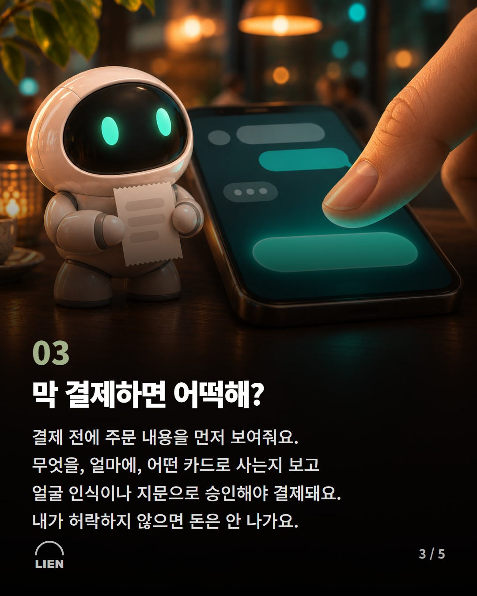
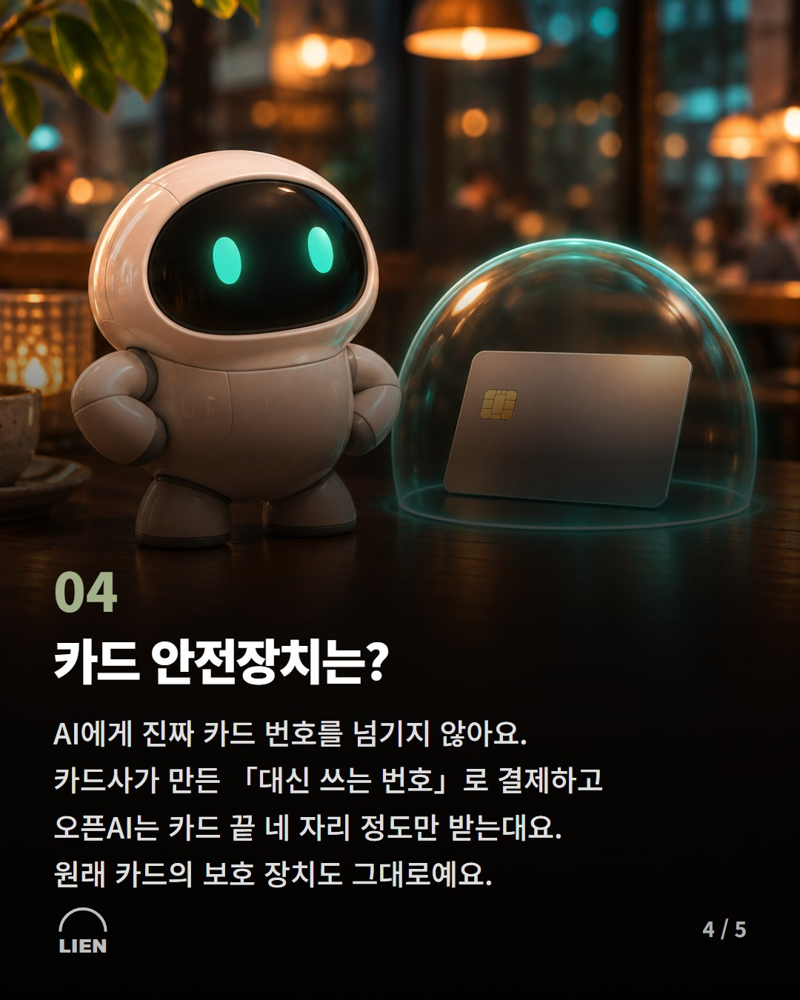
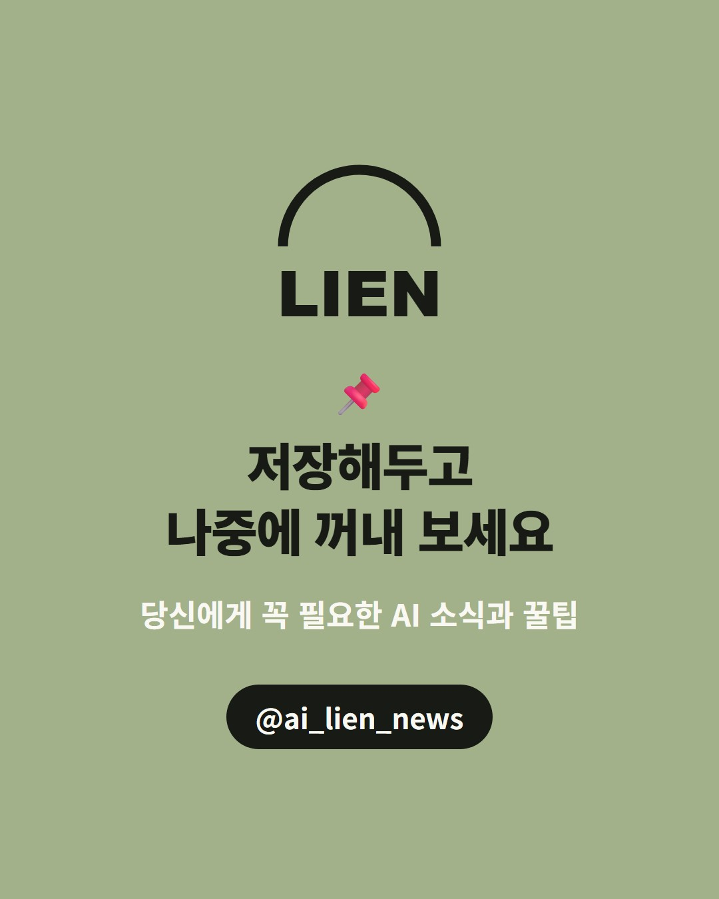

AI 소식이것까지 딸깍?
2026.11.15 · 카드 7장





옆으로 넘겨 보세요 ›
이제 AI가 장보기부터 결제까지 끝내준다고? 💳
오픈AI가 11월 13일 「챗GPT 월렛」을 공개했어요. 챗GPT 안의 AI 비서 「닷(dots)」이 무엇을 살지 함께 고르고, 결제까지 대신 마무리해 주는 지갑 기능이에요.
📌 어떻게 쓰나요
처음 한 번만 카드를 지갑에 등록해 두면 돼요. 그다음엔 닷에게 필요한 걸 사달라고 부탁하면 상품을 찾고 비교한 뒤 결제 단계까지 진행해요. 살 때마다 카드 번호를 다시 넣을 필요가 없어요.
📌 AI가 마음대로 결제하면 어떡하죠?
결제 직전에 ① 무엇을 사는지 ② 총 금액 ③ 어떤 카드로 낼지를 먼저 보여줘요. 그리고 얼굴 인식이나 지문으로 내가 직접 승인해야 결제가 끝나요. 승인한 기록도 남아요.
📌 내 카드 정보는 안전한가요?
진짜 카드 번호 대신 카드사가 만든 '결제용 대체 번호'로 결제해요. 그래서 AI 비서도, 판매처도 실제 카드 번호를 받지 않아요. 판매처는 배송지·연락처처럼 주문에 꼭 필요한 정보만 받아요. 카드 포인트 적립, 문제가 생겼을 때 결제를 이의 신청하는 카드 보호 장치도 그대로예요.
📌 지금 누가 쓸 수 있나요
아직은 일부만요. 미국에서 발급한 비자·마스터카드·아메리칸 익스프레스를 가진 만 18세 이상 미국 챗GPT 프로 구독자 중 일부에게 먼저 열렸어요. 한국 출시 일정은 발표되지 않았어요.
📌 앞으로는
오픈AI는 금액·품목·기간 한도를 미리 정해 두면 그 안에서는 AI가 알아서 사도록 하는 기능을 준비 중이라고 해요. 다만 AI 비서의 접속을 막는 쇼핑몰도 있어서, 어디까지 쓸 수 있을지는 더 지켜봐야 해요.
찾고, 비교하고, 결제하는 일을 통째로 맡기는 날이 생각보다 빨리 오고 있어요. 여러분은 AI에게 결제까지 맡길 수 있으세요? 💬
이 소식 궁금해할 동료에게 보내주세요 📤
매일 아침 꼭 필요한 AI 소식은 @ai_lien_news
출처 ・ OpenAI 공식 발표, TechCrunch (2026.11.13)
#AI소식 #챗GPT #오픈AI #챗GPT월렛 #AI비서